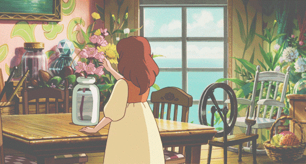
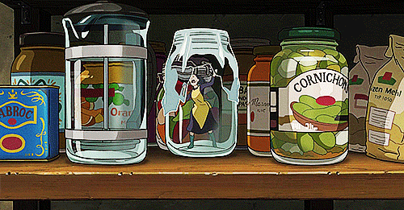

- ½ a cauliflower
- 1 broccoli
- 1 large carrot
- 3 small potatoes
- 1 small leek
- ¼ cup of flour
- ½ cup of milk
- ⅓ clove of garlic
- 5 cups of water
- Salt
- Pepper
- Finely chopped parsley

- Chop the carrots, broccoli, cauliflower, and potatoes into small pieces.
- Slice the leek into thin slices.
- Mince the garlic.
- Heat olive oil on medium heat and cook the sliced leeks till it has softened.
- Add about 5 cups of water and 1 tsp of salt.
- When the water has reached a boil, add all of the chopped vegetables. Make sure that the vegetables are fully submerged in water.
- Boil for less than 5 minutes. Pierce with a fork to see if the vegetables are soft enough.
- Remove the vegetables from the pot and set it aside.
- With the remaining water left in the pot, add flour and milk. Whisk until it reaches a thick consistency.
- Boil the mixture while whisking. Add the boiled vegetables and season it with salt and pepper.
- Now you can eat it! Itadakimasu!
